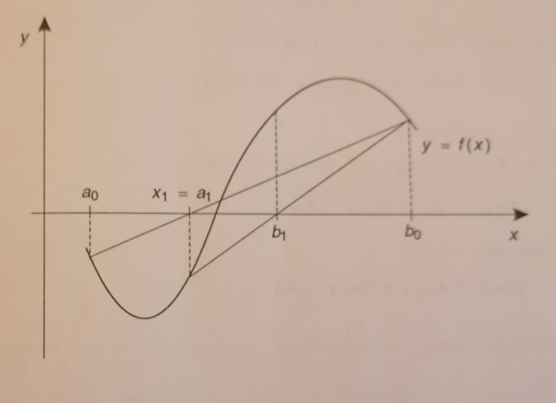

O método da bissecção (ver Metodos_Numericos-Biseccao) é bastante lento em termos de convergência, o que não é de estranhar porque só envolve informação acerca do intervalo que contém a raíz da equação f(x) = 0. O método da Falsa Posição é semelhante ao da Bissecção mas mais rápido, porque além de usar a informação sobre o intervalo que contém a raíz, usa mais informação adicional sobre a função em causa.
Tal como no método da bissecção, precisamos saber os dois pontos iniciais no entorno da raíz, a0 e b0. A corda que passa porque (a0, f(a0)) e por (b0, f(b0)) intersecta o eixo dos xx no ponto x1. Os pontos (a0, f(a0)), (a0, 0), (x1, 0) e (b0, f(b0)), (b0, 0) (x1, 0), são, respectivamente, vértices de dois triângulos semelhantes, como mostra a figura;
obtendo-se \[ \frac{-f(a_0)}{f(b_0)} = \frac{x_1 - a_0}{b_0 - x_1}\] \[ x_1 = \frac{b f(a) - a f(b)}{f(a) - f(b)} = b - \frac{a - b}{f(a) - f(b)} f(b) \]
Em relação ao procedimento iterativo, é em tudo igual ao da Bisecção, sendo que a única difereça está na determinação do xm+1, que neste caso fica \[ x_{m+1} = b_m - f(b_m) \frac{b_m - a_m}{f(b_m) - f(a_m)}\].
Em relação à implementação e tendo em conta que só muda uma linha de código para os dois métodos, podemos fazer um refactor e assim obtemos:
Comparando os dois métodos, vemos que o Regula Falsi converge mais rapidamente (19 iterações quando comparadas com as 32 do método da Bisecção)
0 1,000000000000 -2,000000000000 1 1,333333333333 -0,962962962963 2 1,462686567164 -0,333338874795 3 1,504019003950 -0,101817976604 4 1,516330564760 -0,029894804419 5 1,519918550023 -0,008675065851 6 1,520957481372 -0,002508805135 7 1,521257749126 -0,000724822779 8 1,521344484232 -0,000209349867 9 1,521369534538 -0,000060461333 10 1,521376769087 -0,000017461132 11 1,521378858404 -0,000005042711 12 1,521379461790 -0,000001456314 13 1,521379636045 -0,000000420577 14 1,521379686370 -0,000000121461 15 1,521379700903 -0,000000035077 16 1,521379705100 -0,000000010130 17 1,521379706312 -0,000000002926 18 1,521379706662 -0,000000000845 19 1,521379706764 -0,000000000244Nota: parece que estou aqui todo armado em espertalhão a fazer cenas em Scala mas é precisamente o contrário: estou a aprender esta linguagem fascinante em particular e a programação funcional em geral, de forma que este código apesar de funcionar, pode não ser o ideal/melhor/mais otimizado. Serve apenas para eu ir praticando as ideias e conceitos da programação funcional com implementação em Scala.